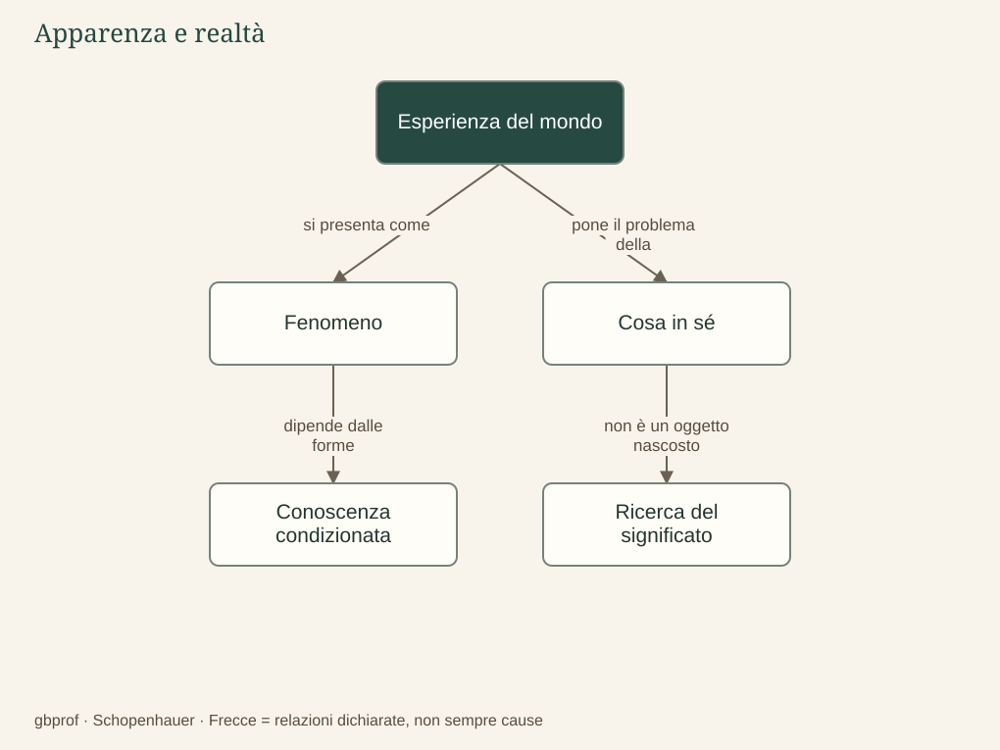

A · Comprendere Schopenhauer · 01
Il problema di partenza
Il mondo è davvero come ci appare?
Quando guardiamo una stanza, ci sembra di incontrare semplicemente le cose che la riempiono: il tavolo, la finestra, i libri. Tuttavia possiamo domandarci se ciò che conosciamo coincida con la realtà considerata indipendentemente dal nostro modo di conoscerla. La domanda non riguarda soltanto gli errori dei sensi, come un oggetto che appare deformato nell’acqua; riguarda anche la percezione più corretta, perché ogni esperienza si presenta a qualcuno e attraverso determinate forme. Schopenhauer comincia da questa difficoltà, ereditata dalla filosofia di Kant, e la trasforma nel punto di partenza di una ricerca sul significato dell’esistenza.
Il mondo precedente: il limite posto da Kant
Kant aveva distinto il fenomeno, cioè la realtà quale appare nelle condizioni della conoscenza umana, dalla cosa in sé, considerata indipendentemente da quelle condizioni. Il fenomeno non è una bugia: è l’oggetto dell’esperienza e della scienza. Il limite consiste nel fatto che non possiamo cancellare il nostro modo di conoscere per verificare come siano le cose fuori da ogni possibile esperienza. Schopenhauer accoglie questa distinzione, ma non si accontenta di restare sulla superficie esterna del mondo; cerca una via che permetta di comprenderne dall’interno il significato.
Non bisogna dunque immaginare due universi, uno vero nascosto dietro l’altro falso. Il problema riguarda due modi di considerare la medesima realtà. Quando Schopenhauer usa immagini come il sogno o il velo di Maya, tratte anche dalla sua lettura di tradizioni indiane, sottolinea il carattere condizionato dell’apparire; non dimostra che la nostra vita sia un’allucinazione o che ciascuno possa inventare a piacimento ciò che esiste.
Una frattura nell’immagine dell’uomo
Arthur Schopenhauer nasce a Danzica nel 1788 e muore a Francoforte nel 1860. La prima edizione del suo libro principale, Il mondo come volontà e rappresentazione, esce alla fine del 1818 con data 1819. Questo dato colloca il suo pensiero nell’Europa successiva alla Rivoluzione francese e all’esperienza napoleonica, in un periodo nel quale la filosofia tedesca discute il rapporto tra ragione, realtà e storia. La sua risposta contrasta con la fiducia in un ordine razionale capace di giustificare il cammino complessivo del mondo.
La biografia, però, non spiega da sola la filosofia: non basta ricordare delusioni o conflitti personali per comprendere una tesi sulla sofferenza universale. Il passaggio decisivo è teorico. Se l’uomo non è anzitutto una coscienza sovrana, ma un essere attraversato da bisogni e impulsi, allora la ragione potrebbe servire una forza che non controlla. Il percorso comincia quindi con una domanda sulla conoscenza e conduce a una domanda sul vivere: che cosa accade quando il mondo non offre alcuna garanzia di essere ordinato alla nostra felicità?
Il problema in un’immagine
Dopo la lettura
Mappa di sintesi


Leggi la mappa in forma testuale
- Esperienza del mondo si presenta come Fenomeno.
- Esperienza del mondo pone il problema della Cosa in sé.
- Fenomeno dipende dalle forme Conoscenza condizionata.
- Cosa in sé non è un oggetto nascosto Ricerca del significato.
Fermati sul problema
Quale affermazione distingue correttamente fenomeno e illusione?
Confronta il tuo ragionamento
Il fenomeno è la realtà conosciuta nelle condizioni dell’esperienza. Il limite riguarda le condizioni del conoscere, non un errore percettivo: strumenti migliori restano dentro l’esperienza.